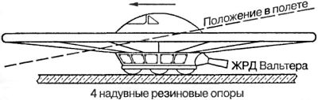
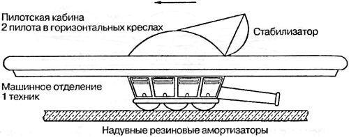
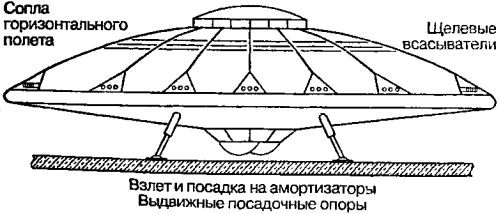
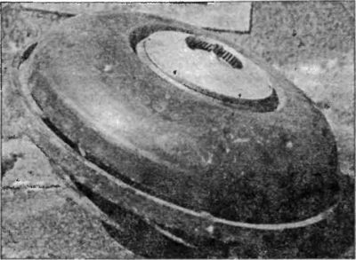
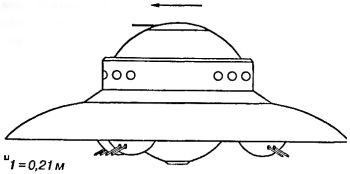

Летающие диски Третьего рейха
Первые сведения о секретной программе нацистов по созданию летательных аппаратов совершенного нового типа появились сразу после окончания войны. В частности, утверждалось, будто бы в ракетном центре Пенемюнде были построены и испытаны какие-то «летающие диски» («Deutsche Flugscheibe»). С какого-то момента из-за нехватки рабочей силы Вальтер Дорнбергер для ряда работ стал привлекать узников специального концентрационного лагеря КЦ-А-4. И вот что рассказал один из них:
«…однажды, в сентябре 1943 года, мне посчастливилось стать свидетелем одного интересного события.
<…> На бетонную площадку возле одного из близстоящих ангаров четверо рабочих выкатили круглый, похожий на перевернутый вверх дном тазик, аппарат с прозрачной каплеобразной кабиной посередине. И на маленьких надувных колесах.
Затем по взмаху руки невысокого грузного человека странный тяжелый аппарат, отливавший на солнце серебристым металлом и вздрагивавший при каждом порыве ветра, издал шипящий звук вроде шума паяльной лампы, оторвался от бетонной площадки и завис на высоте примерно пяти метров. Недолго покачавшись в воздухе — наподобие «ваньки-встаньки», — аппарат вдруг как бы преобразился: его контуры стали постепенно расплываться. Они как бы расфокусировались.
Затем аппарат резко, как юла, подпрыгнул и змейкой стал набирать высоту. Полет, судя по покачиванию, проходил неустойчиво. Внезапно налетел порыв ветра с Балтики, и странная конструкция, перевернувшись в воздухе, резко стала терять высоту. Меня обдало потоком гари, этилового спирта и горячего воздуха. Раздался удар, хруст ломающихся деталей — машина упала недалеко от меня. Инстинктивно я бросился к ней. Нужно спасти пилота — человек же! Тело пилота безжизненно свисало из разбитой кабины, обломки обшивки, залитые горючим, постепенно окутывались голубоватыми струйками пламени. Резко обнажился еще шипевший реактивный двигатель: в следующее мгновение все было объято огнем…
Так состоялось мое первое знакомство с экспериментальным аппаратом, имевшим двигательную установку — модернизированный вариант реактивного двигателя для самолетов «Мессершмитт-262». Выхлопные газы, вырываясь из направляющего сопла, обтекали корпус и как бы взаимодействовали с окружающим воздухом, образуя вращающийся кокон воздуха вокруг конструкции и тем самым создавая воздушную подушку для передвижения машины…»
Что за странный аппарат видел заключенный концентрационного лагеря КЦ-А-4? И если диск испытывался в Пенемюнде, то не мог ли он быть часть ракетной программы Третьего рейха?..
До наших дней дошла информация о восьми технических проектах, которые можно классифицировать как проекты «летающих дисков». И читая скупые на подробности сообщения о них, не перестаешь удивляться, сколь плодовитой может быть конструкторская мысль.
Дискообразная форма летательного аппарата давно привлекает внимание аэродинамиков. В самом деле, расчет показывает, что на больших скоростях эта форма является оптимальной, вызывая наименьшее сопротивление среды. Кроме того, такой аппарат не нуждается в крыльях, сам являясь, по сути, «летающим крылом», имеющим высокую жесткость и не подверженным возникновению автоколебаний.
Первую попытку создания самолета с круглым крылом предпринял в 1909 году русский изобретатель Анатолий Георгиевич Уфимцев. Механик-самоучка, без специального образования, Уфимцев построил четыре оригинальных авиационных двигателя и два самолета под названием «Сфероплан».
«Сфероплан-1», созданный Уфимцевым летом 1909 года, имел крыло круглой в плане формы, такое же круглое горизонтальное оперение на плоской расчалочной ферме и трехколесное шасси (с носовым колесом). Аппарат был снабжен двухцилиндровым двигателем мощностью в 20 лошадиных сил. «Сфероплан» испытывался, делал пробежки, но от земли не отрывался и был перестроен в следующий, более крупный аппарат.
«Сфероплан-2» имел ту же конструкцию, но его размеры были увеличены вдвое. Новый биротативный шестицилиндровый двигатель в 60 лошадиных сил был установлен под передней кромкой крыла на вертикальной раме. Постройка «Сфероплана-2» закончилась в июне 1910 года. Но и этому аппарату не суждено было подняться в воздух. При испытаниях 11 июля самолет перевернуло и разрушило налетевшим шквалом.
В первой половине XX века конструкторы летательных аппаратов неоднократно обращались к дисковидной форме. Дисковидный аэроплан сделали в США в 1915–1916 годах. Затем в начале 30-х годов фирма «Макклери» поднимала в небо самолеты дисковидной конструкции. Летающий «треугольник» в 1939 году собрали французы, а испытывали уже немцы.
Но все эти конструкции были изготовлены в единственном экземпляре, а их летные испытания можно пересчитать по пальцам — работая с новой формой летательного аппарата, конструкторы столкнулись с целым рядом проблем, в те времена не имевших приемлемого решения. Более серьезно подошли к делу инженеры Третьего рейха.
«Модель-1» («Колесо с крылом») дискообразного летательного аппарата была построена немецкими инженерами Шривером и Габермолем еще в 1940 году, а испытана в феврале 1941 года близ Праги. Эта «тарелка» считается первым в мире летательным аппаратом вертикального взлета. По конструкции она несколько напоминала лежащее велосипедное колесо: вокруг кабины вращалось широкое кольцо, роль «спиц» которого выполняли регулируемые лопасти. Их можно было устанавливать в необходимые позиции как для горизонтального, так и для вертикального полета. Первоначально пилот располагался внутри как в обычном самолете, затем его положение изменили на лежачее. В качестве силовой установки использовались как обычные поршневые двигатели, так и двигатели Вальтера.

Эта машина принесла своим конструкторам немало проблем, ибо малейший дисбаланс вызывал значительную вибрацию, особенно на больших скоростях, что и служило основной причиной аварий. Была предпринята попытка утяжелить внешний обод, но в конце концов «Колесо с крылом» исчерпало свои возможности.
«Модель-2» («Вертикальный самолет» или «Фау-7») представляла собой усовершенствованный вариант предыдущей. Конструкторы увеличили ее размеры, чтобы разместить двух пилотов, лежащих в креслах. Были также усилены двигатели, повышены запасы топлива. Для стабилизации использовался рулевой механизм, подобный самолетному.

Испытания «Фау-7» состоялись 17 мая 1944 года. Скороподъемность этого аппарата достигала 288 км/ч, что по тем временам было близко к рекорду; скорость горизонтального полета — 200 км/ч. Как только набиралась нужная высота, несущие лопасти изменяли свою позицию и аппарат двигался подобно современным вертолетам.
Другая модификация «Модели-2», получившая название «Дисколет», была собрана на заводе «Ческо Морава» и испытана 14 февраля 1945 года На ней был установлен жидкостно-реактивный двигатель Вальтера, а главный ротор приводился во вращение с помощью сопел, расположенных на концах лопастей.
Впрочем, этим двум проектам было суждено остаться на уровне опытных образцов. Множество технических и технологических препятствий не позволили довести их до кондиции, не говоря уже о серийном производстве.
Но конструкторы Третьего рейха не собирались останавливаться на полпути, и на свет появился очередной аппарат, намного опередивший свое время.
«Модель-3» («Диск Беллонце»), над разработкой которой работали три немецких конструктора: Беллонце, Шривер и Мите, была выпущена в двух вариантах: 38 и 68 метров в диаметре. (Скорее всего, один из этих вариантов, а возможно, и более ранний прототип видел узник лагеря КЦ-А-4.) Аппарат был окольцован установкой из 12 наклонных турбореактивных двигателей: вероятно, серийно производившиеся «Jumo-004» или «BMW-003». Они своими струями охлаждали главный двигатель и, всасывая воздух, создавали вокруг аппарата область разрежения, что способствовало его подъему с меньшим усилием.
Главный двигатель аппарата заслуживает особого внимания. Его сконструировал австрийский изобретатель Виктор Шаубергер. В корпусе двигателя размещался ротор, лопасти которого представляли собой спиралевидные стержни прямоугольного сечения. Над корпусом были закреплены мотор-стартер и генератор в кожухе. Рабочим телом в двигателе служила вода. Мотор-стартер приводил в движение ротор, который формировал быстровращающийся водяной тор. Шаубергер подчеркивал, что при определенных условиях вихрь становился самоподдерживающимся, как природный смерч. Для этого необходимо было подводить к вихрю тепло, которое поглощалось им и поддерживало его вращение. Этот процесс Шаубергер называл «имплозией» или «антивзрывом». Когда двигатель выходил на самодостаточный режим, мотор-стартер отключался, в двигатель через воздухозаборники, расположенные под днищем, подавался воздух, который сжимался и вытеснялся к центру водяного тора, выбрасываясь через центральное сопло и создавая тягу. Какая-то часть воды терялась вместе с воздухом, поэтому кроме подачи теплоты необходимо было подавать в двигатель воду. Одновременно двигатель вращал вал электрогенератора, который мог быть использован для питания системы управления и подзарядки батарей всего аппарата.

19 февраля 1945 года «Диск Беллонце» совершил свой первый и последний экспериментальный полет. За 3 минуты он достиг высоты 15 километров и скорости 2200 км/ч при горизонтальном движении! Он мог зависать в воздухе и летать назад и вперед почти без разворотов, для приземления же имел складывающиеся стойки.

Аппарат, стоивший миллионы рейхсмарок, в конце войны был уничтожен. Хотя завод в Бреслау (ныне — Вроцлав), где он строился, и попал в руки советских войск, это ничего не дало. Шривер и Шаубергер сумели избежать плена.
В письме к другу в августе 1958 года Виктор Шаубергер писал:
«Модель, испытанная в феврале 1945 года, была построена в сотрудничестве с первоклассными инженерами-специалистами по взрывам из числа заключенных концлагеря Маутхаузен. Затем их увезли в лагерь, для них это был конец. Я уже после войны слышал, что идет интенсивное развитие дискообразных летательных аппаратов, но, несмотря на прошедшее время и уйму захваченных в Германии документов, страны, ведущие разработки, не создали хотя бы что-то похожее на мою модель. Она была взорвана по приказу Кейтеля».
После войны Шаубергер работал над концепцией источника энергии, основанного на создании водяного вихря в замкнутом цикле. Также он продолжал разрабатывать теорию гидротурбин и гидроустановок вихревого типа. В 1958 году конструктора пригласили в США, где ему было предложено провести работу по воссозданию «Диска Бел-донце» и «вихревого движителя», но он ответил твердым отказом.
В работах, посвященных секретным разработкам ученых Третьего рейха, можно встретить упоминание о так называемом проекте «Хаунебу-2» («Haunebu 2»). Об этом «летающем диске» мало что известно, и вполне может оказаться, что он был из ряда перспективных предложений, подобных «бомбардировщику-антиподу» Зенгера. Судя по сохранившемуся описанию, «Хаунебу-2» представлял собой дискообразный бронированный аппарат диаметром в 25,3 метра с мощной силовой установкой неизвестной конструкции, способной обеспечить полет около 55 часов на скорости в 6000 км/ч (?!). Он должен был нести экипаж из 9 человек и вооружение, состоящее из шести корабельных 200-миллиметровых установок залпового огня в трех нижних вращающихся башнях и одного 280-миллиметрового орудия в верхней башне.
Как мы видим, даже в самом общем представлении характеристики «Хаунебу-2» сопоставимы с характеристиками «Тысячелетнего Сокола», на котором летал Хан Соло в незабвенных «Звездных войнах». Перед нами самый натуральный космический истребитель, образчик технологий будущего. Впрочем, мы знаем о нем лишь из архивных бумаг. На бумаге он и остался…
